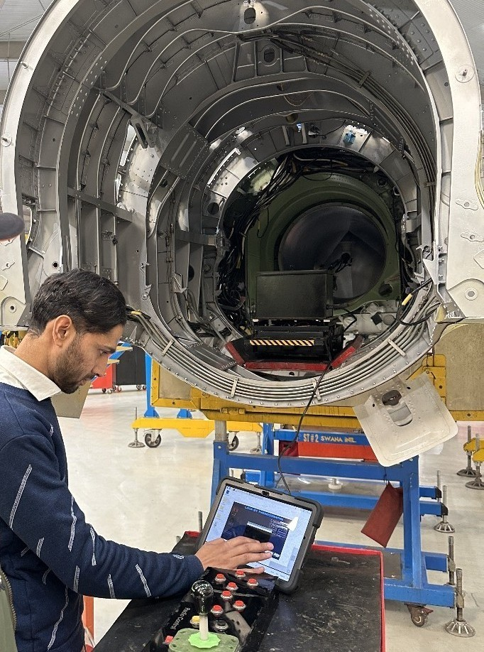
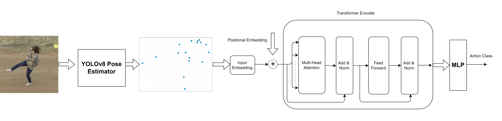

Development of an Islam specific chatbot based on LLMs
Duration: March 2025 till date
This is a side project that I started because of a dire need of easy access to authentic
Islamic information. The chatbot uses Paraphrase Multilingual MiniLM L12 V2 for sentence embedding and mT5
model (Multilingual varient of the T5 Model) as the base model for query and response generation. It is bieng
trained on a dataset of Islamic books, Hadiths and Quranic verses from scanned pdfs. The chatbot is being
trained on Urdu, Arabic, Farsi and English texts, as most of the Islamic corpus is in these languages, but it
can communicate in many languages as is the capability of the mT5 model. The chatbot will also be integrated
with voice recognition system for a more simple and easy use.
Development of a portable scanning system for the detection of sub-surface rivet-related defects in aircraft
structures using Lock-in Thermography
Duration: June 2023 till date
This project relates to the development of a novel Lock-In Thermography-based scanning system to detect
subsurface defects in aircraft rivets. The system includes a customized thermographic device
consisting of a thermal camera (IRS320S), heating source (Halogen Bulbs), synchronized control circuitry,
and an indiginously developed
image processing based software utilizing the Discrete Wavelet Transform, augmented by spatial gradient
and mean filtering methods. The software is integrated into a portable robotic arm (developed in-house),
which is wirelessly controlled using a custom-made GUI from a tablet. This robotic arm can scan the inside of
engine intake as well as other areas of aircraft for defective rivet detection.
This is a 16 million PKR (57000 USD) project managed and completed by 2 research assistants including me, and
supervised first by Dr. Haris Ali Khan and then by Dr. Zahid Ahmed Qureshi of NUST. This device will prevent almost
500 million USD loss annually which is currently being faced by the Pakistan aviation industry due to faulty rivets.

Development of a Graphical User Interface (GUI) for the database management of contractors' info of CAE
Duration: October 2024 to January 2025
The contractors' information regarding their contracts with the College of Aeronautical Engineering (CAE), including
the contract value, line item details, expected date of delivery etc. are all managed through a customised
GUI. New contract information can be added and existing updated based on the contract timeline.
Development of Lock-in Thermography system for thermographic scanning
Duration: June 2024 to December 2024
The most crucial part of the portable scanning system for defect detection in aircraft structures is the
Lock-in Thermography system, in which the intensity of the halogen lamps is modulated according to the
selected frequency. This system is indiginously developed using Raspberry Pi as the main control unit, along
with a digital voltage regulator (RobotDyn), ESP32 and a Thermal camera. The ESP32 module modulates the AC voltage
through the digital voltage regulator, upon recieving a signal from the GUI created in Raspberry Pi. At the
same time, the Thermal Camera starts capturing the thermal profile of the target area.
Human activity recognition in aerial videos
Duration: November 2022 to May 2023
Human activity recognition is a crucial component of security and serveillance systems. To this end, a
computationally efficient method is proposed for human activity recognition in aerial videos. The method
is based on the extraction of skeletal keypoints from video frames, which are then fed to a Transformer
network for action classifcation. Different pose extractors were used for skeletal data retrieval such as
OpenPose, EfficientPost, DensePose, YOLOv7, YOLOv8 etc. with YOLOv8 being the most efficient in terms of accuracy
and computational cost. The method is tested on a publicly available dataset and compared with several state of the art techniques
such as ST-GCN, PA3D, PoTion etc. with our method performing better in terms of accuracy and computational cost. This project resulted
in a paper publication in IEEE Access.

Development of Medical Otoscope for the diagonosis of internal ear canal
Duration: February 2023 to May 2023
An Otoscope is a medical device which is used to look into the ear canal for diagonostic purposes. Health practitioners
use Otoscope to diagnose ear infections during regular checkups and also to investigate ear symptoms. An Otoscope potentially gives a view of the
internal ear canal and tympanic membrane or eardrum. Video Otoscope is the use of a short and rigid endoscope that uses a video camera
to transmit images to a larger screen for magnification. This Otoscope is designed by using an endoscope camera connected to a Raspberry
Pi 4B board, and a customised GUI to control its functionality. It is powered by a rechargable battery, which lasts for about 2 hours
once fully charged.